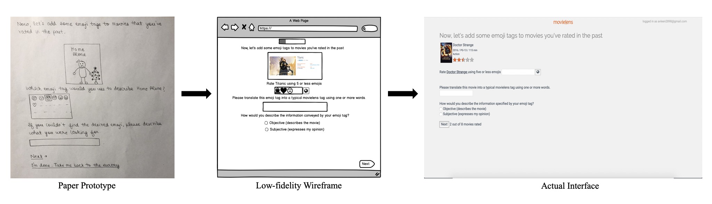

Emojis have been around since the late 1990s, but only recently gained popularity after being integrated into smartphones. While they’re popular and highly used, there is also a certain amount of ambiguity associated with them. Research has already been carried out to determine if people interpret emojis differently and the results confirm that they do. There could be multiple reasons behind this including each person’s own perspective or the variability in emoji renderings across platforms. Motivated by the work that has already been done in this field, my goal was to find what influences people to select a particular emoji rating for a movie they’ve already rated in the past. For instance, does their emoji tag rating (a combination of five or less emojis) represent the emotions they felt during the movie or their favorite scene from the movie or an inanimate object associated with the movie. There could be a myriad other reasons for their choice. I was also curious to see if people emphasized the same idea through emoji tags or if they rated several aspects of the movie. I designed a survey for MovieLens (a movie recommender system created and maintained by GroupLens ) to explore the research question “What influences a users decision when picking an emoji to rate a movie and are user opinions more subjective or objective?”.
The design and implementation of the survey was a long iterative process and involved coding for a full stack web application. Some key findings from the usability tests conducted were as follows:
- When adding emoji tag ratings, users felt more inclined to describe the movie rather than rate it. It was hard for them to select a tag that represented some form of rating and so they ended up picking the most important aspects of the movie and translating those to an emoji.
- Users couldn’t decide if their opinions were more subjective or objective and for the most part thought that it was a mixture of the two.
- Even though users had access to an entire emoji set with a search feature to pick the emoji they wanted, when they searched for an emoji, as opposed to scrolling and picking the one they had in mind, they ended up choosing a different one just because the search results showed them options they hadn’t even thought of.
- While their overall interaction with the survey was smooth and they enjoyed doing it, observing them made me realize that the emoji tag feature wouldn’t benefit MovieLens because of the huge gap between the intended meaning of the tag and its interpretation by other users.